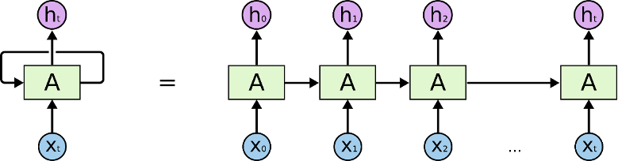

What is does is:
Scrape, map and generate classifiers with the intention of generating an overview of the extent of activity already taking place at an organization
Project Background & Client Introduction
Our project came about due to a growing need within UCL, centred around the research facility in which their research administration, namely finding various things based on their topic of research such as names and other key terms. This search was taking longer and longer each year due to the increasing number of articles, papers and other publications on each topic coming out each year. This got us connected to various researchers varying from professors, PhD research students and sustainable development researchers. They all required a method to speed up this process and to help get more accurate data automatically rather than repeating this each year manually.
You may find the client's details below:
Neel Desai - neel.desai.13@ucl.ac.uk
Marilyn Aviles - marilyn.aviles@ucl.ac.uk
Prof Ann Blandford - ann.blandford@ucl.ac.uk
Dr. Simon Knowles - s.knowles@ucl.ac.uk
Project Goals
Our main project goals include trying to achieve a way for all researchers to be able to find and contact other researchers that are working on or have worked on the same field of study as them. The project goals also include trying to ensure that the RPS database can be scraped in order to find all papers that are linked to the search field used that can then be used to find all related researchers.
Requirement Gathering
We gathered various requirement in the form of a MOSCOW list that was created through a series of group and individual meetings with each of our clients in order to gather all the features and methods that are needed as well as the priority of each of these. We went over these features multiple times with our clients and added a few as well as splitting up other requirements into different parts.
Personas


Use Cases
Alison has trouble identifying researchers to collaborate with across the IHE. She would like to use this tool as a quick and efficient way of searching for researchers across different engineering fields. She wants to establish connections across UCL and monitor the progress of her colleagues.
Jonathan is a PhD researcher who would use this data tool in order to quickly find and sort through different research topics that have or currently are conducted at his university. He aims to gain insight into the extent to which UCL is involved in promotion of the 2015 UN’s Sustainable Development Goals in both teaching and research.
MoSCoW List
Must Have:
Data Scraping
Data Validation
Data Visualisation
Options for Visualising (Tableau, Bubble Chart, List, Spreadsheet)
Should have:
Adding configuration options for the search
Link to IRIS account
Interaction with the bubble chart / tableau to give a list of researchers within a particular category
Could Have:
Options for the user to link with other researchers found (Connections)
Main page description of what the website does and how it works
Load and save pages to keep a record of previous searches
Would like to have:
Profile pages for each researcher
Filtering options to allow for more explicit searches
Related Projects Review
One of the previous projects conducted is the “Bubble-Chart Project”, which is a pilot project exploring the use of programming techniques as a tool to create an ontology-based mapping of healthcare engineering and digital health expertise across the Institute of Healthcare Engineering. Inspired by the IDH Bubble Chart, the aim of this project is to update the original version with new information and themed-based categories that include the wider breadth of healthcare engineering expertise across IHE. The first phase of the pilot explored using UCL’s RPS platform as a source data for the project.

What we can learn from this project is the data sources used, as well as explore classification techniques for classifying researchers’ publications into appropriate fields. Subsequently, given existing data that was put together manually, UCL5 MieMie aims to automate data scraping and validation using Python programming language and deployment technologies.
Technology Review
Possible Solutions:
Possible solutions include using Python’s scraping library Beautifulsoup to gather data from a specified source, setting up a deployment environment in Microsoft Azure and utilising Azure Functions for timing each scrape and validation automatically. The code base itself resides on a GitHub repository.
The idea is to perform an initial large scale scrape, gathering initial set of data in a structured and normalised manner. Upon completion, the next step involves a different set of programs that run with the purpose of checking the source data set for potential updates / changes to the data. If any change is observed, the scripts are to stage a validation on the project’s data.
Possible Design Structure
The code structure would involve a general controller to manage a potentially threaded program, running multiple validation scripts on an existing database. Azure Functions allows time the scrapes, where the python file object is passed to the azure.functions.TimerRequest object to perform a set operation. The time is specified in the CRONTAB notation - “schedule: 0 0 * * * *” [1], which specifies that an action is to be performed once at the top of every hour).
Possible Programming Languages / APIs
To gather data, we are going to be using RPS UCL data repository. It has several access types, and the public section of it is accessible through the use of their API [2].
Database
Microsoft Azure SQL Server will be used to host a SQL Database. Alternative options include using non-relational databases such as a document based database - mongoDB. However, upon evaluation, the team has decided to use the concept of relations to organise data in a logical and coherent manner, with faster access time, ensuring data consistency and integrity.
Deployment Automation:
Digital Ocean
Digital Ocean Allows for creation of a Droplet Cronjob, for automation of particular scripts that run in a Linux VM. Although it's convenient, it does not provide features like backups, security firewall and it's harder to keep track of permissions compared to something like AWS or Microsoft Azure.
It is a good choice for this project due to its simplicity; given a tight schedule we are still able to manage to stick to the ideologies of continuous integration and test-driven development.
Microsoft Azure (Functions)
Secure, robust, scalable and stable. However, questionable for a smaller size project.
Microsoft Azure Functions allows for cron job-like functions to run continuously, relatively easy to set up.
Microsoft DevOps (Pilepines)
Ideal for cooperation, continuous delivery and deployment. It is a useful tool for this project, allowing for planning, tracking and evaluating current progress using Azure Boards.
Unlike Digital Ocean, Microsoft DevOps is superior with regard to deployment frequency, reduced change failure rate and recovery. It was a rival choice, however, one needs to take the scale and development process into consideration.
CloudSigma
A good tool with strong performance, speed and security, however it lacks some essential features such as secure routine back-ups or easy shared hosting. Additionally, it uses servers based in the UK for better speed and connection with a lower latency, but this is usually a tool used for much larger projects than the one that we are developing.
Heroku
Heroku is a convenient platform for fast deployment, However, it lacks many of the security and scalability features that are offered by platforms like Microsoft Azure.
References
[1] Docs.microsoft.com. 2020. Timer Trigger For Azure Functions. [online] Available at: https://docs.microsoft.com/en-us/azure/azure-functions/functions-bindings-timer?tabs=python [Accessed 6 December 2020].
[2] Information Services Division. 2020. How To Include RPS Data On Your Webpages. [online] Available at: https://www.ucl.ac.uk/isd/how-to/how-to-include-rps-data-your-webpages [Accessed 6 December 2020].
System Design
Server Communication Structure
The user would send requests to the database via a search tool that would use keywords of the user’s choice that would be used as the basis of their search. This request is sent to the azure database where it then sends a request to the information database (such as RPS) and this would provide the full scale of information and data that it contains. This information is used by our algorithm to scrape and sort through the information based on the user’s request. Once it has the required, sorted information, it is then sent back to the user in a form that can be easily visualised.

Design Structure
OOP Concepts
Programming Language and Integrated Development Environment
We will be using the Python programming language for ease of implementation with front-end web development and natural language processing
There exist many libraries and APIs such as NLTK, PyTorch and spaCy that are widely used for NLP related tasks and provide a large amount of support, which, furthermore, will help with learning around the subject area
The Microsoft Azure cloud-based service offers central management for our system code, databases and timed scrapes
Azure functions support data mining related tasks – scraping the RPS database and UCL module catalogues
Web Scraping
First Part: Scraping UCL Module Catalogue
As the first step, it was necessary to gain insight into the extent to which UCL is able to deliver the key ideologies outlined in the 2015 United Nations Sustainable Development Goals (hereafter SDGs) through teaching. Hence, the UCL Module Catalogue was proposed as a data source for natural language processing and categorisation. Initially, the UCL API was used to comprise a unique module link. For example, the API provided module name - “Neurology and Neurosurgery - Basic” and module identification “CLNE0012”, which was then used to concatenate to form a final module link - https://www.ucl.ac.uk/module-catalogue/modules/neuromuscular-literature-review-CLNE0010. The data as such was stored in the all_module_links.json file for future use and can be updated by running the initialise_files.py file in the MODULE_CATALOGUE/INITIALISER directory. Consequently, that unique link was piped into the "BeautifulSoup" Python library to obtain a webpage html file data for all 5576 modules (at the time of conducting the project).

Object oriented programming allowed us for greater control of instantiation, encapsulation and abstraction of data mining scripts. Specifically, it was useful in abstraction of initialisation, specifically, obtaining all module-related and departmental metadata. Thus, by running global_controller.py one may instantiate all necessary files to proceed with the module-to-SDG mapping process. The following data points were obtained: module title, module ID, faculty, department, credit value, module lead name and description. Upon processing each one of those strings into cleaner form, the data was organised into a tuple and stored in a list and pushed to the ModuleData table in the MainDB database using “pyodbc” Python library.
Processing Algorithms & Back-end
It is worth noting that the processes described below formed a part in a back-up, alternative approach to SDG mapping. Due to an issue with large dataset annotation, it was agreed with our clients that this change was necessary for delivering an improvement into the current classification processes.
Module Match

The following process illustrated below demonstrates the algorithm for matching UCL Module Catalogue to sustainable development goals provided in the SDG_Keywords.csv file. The processing file - map.py also pulls the data from ModuleData database table, which contains all data relating to a particular module, including its description, title, credit value, module lead name and so on. It uses that data to comprise a single string, which alongside a single keyword is piped into a pre-processing unit, which uses NLTK to lemmatise the given strings. Lastly, the algorithm checks whether or not that keyword is present in any text data in a particular module, if so, it stores it into the matchedModulesSDG.json file.
Scopus Match

Diagram above illustrates a similar to the Module Catalogue to SDG Mapping, but this time it matches Scopus Research Publications to the sustainable development goals. The only difference is the type of data considered. Scopus provides more details about a particular publication, therefore, it allows for greater comparison and a more accurate matching. In this case, data points like abstract, title, author keywords, index keywords and subject area keywords are considered during string comparison. As a result, it generates the matchedScopusSDG.json file for further development.
Scopus Data Generation

Diagram above illustrates the formation of the underlying dataset - common to all members of our client group. Therefore, the pybliometrics.py program carries out numerous tasks including reading individual research publication identifiers (DOIs) from the Research Publication Service (RPS) to act as a basis for the Scopus API request using the Python “requests” library
NLP – Natural Language Processing
Keyword Searches
The brief involves mapping Standard Development Goals (SDG) keywords to the UCL module catalogue to achieve a better understanding as to how much course content and teaching relates to each SDG.
The optimal solution for the problem is still unknown. The following research areas listed below are to be experimented with to gain a better understanding of problem we need to solve:
Keyword Extraction – involves extracting keywords from text documents.
Keyword Assignment – tagging documents with keywords, phrases or topics.
Text Classification – categorizes or clusters text into organized groups. Text classifiers automatically analyse text and assign pre-defined tags/keywords.
Topic Modelling – statistical model for discovering abstract topics that occur in a collection of documents.
The python libraries listed below will help with the implementation of these related tasks. The above approaches are all subsets of NLP.
PyTorch
PyTorch framework - an open-source machine learning library for natural language processing. The purpose of NLP is used to classify activities taking place across UCL, within Healthcare engineering.
There are 2 levels of classes that can be used for building recurrent neural networks:
Multi-layer classes: nn.RNN, nn.LSTM, nn.GRU
Cell-level classes: nn.RNNCell, nn.LSTMCell, nn.GRUCell
Multi-layer classes represent deep bidirectional recurrent neural networks. Cell-level classes represent a single cell, which can handle only one timestep of input data.
70% of data in the training set – this is the data that the recurrent network will be trained on. The remaining 30% of data will be used for the validation set – unseen data to measure the accuracy of the recurrent neural network.
The test and validation data sets will be partitioned using the RPS data repository and UCL Discovery as an alternative data source.
For example: torch.utils.data.random_split(dataset, lengths)

NLTK – Natural Language Toolkit
The NLTK – Natural Language Toolkit has advantages over PyTorch, making the code much more condense, manageable, and ease of implementation for NLP.
NLTK feature include tokenization, named-entity recognition, text classification, text tagging and RAKE – Rapid Automatic Keyword Extraction which is used for mapping keywords to UCL modules listed in the module catalogue.
References
[1] 2020. Keyword-Based Topic Modeling And Keyword Selection. [ebook] Evanston, Illinois: Northwestern University. Available at: https://arxiv.org/pdf/2001.07866.pdf [Accessed 10 December 2020].
[2] Lagus, K. and Kaski, S., 2020. Keyword Selection Method For Characterising Text Document Maps. [online] Helsinki, Finland: Helsinki University of Technology, Neural Networks Research Center. Available at: https://users.ics.aalto.fi/krista/papers/lagus99icann.pdf [Accessed 10 December 2020].
[3] Montantes, J., 2020. Getting Started With NLP Using The Pytorch Framework - Kdnuggets. [online] KDnuggets. Available at: https://www.kdnuggets.com/2019/04/nlp-pytorch.html [Accessed 10 December 2020].
[4] Nascimento, A., 2020. How To Cook Neural Nets With Pytorch. [online] Medium. Available at: https://towardsdatascience.com/how-to-cook-neural-nets-with-pytorch-7954c1e62e16 [Accessed 10 December 2020].
[5] Pytorch.org. 2020. TOURCH.NN — Pytorch 1.7.0 Documentation. [online] Available at: https://pytorch.org/docs/stable/nn.html#recurrent-layers [Accessed 10 December 2020].
[6] Spacy.io. 2020. Training A Text Classification Model. [online] Available at: https://spacy.io/usage/training#textcat [Accessed 10 December 2020].
Testing
La croix kombucha bespoke dreamcatcher, tumeric tbh quinoa microdosing gastro pub. 8-bit freegan chartreuse synth jean shorts farm-to-table, cold-pressed authen tic. Mixtape hella beard meditation, organic polaroid waistcoat humblebrag taxider my tumblr. Hexagon kinfolk chartreuse shoreditch.
Pour-over hammock intelligentsia hashtag air plant distillery. Sustainable selvage hashtag, +1 messenger bag pop-up banh mi jianbing art party roof party try-hard retro small batch. Kogi fanny pack raclette mustache, pok pok jean shorts +1 tote bag keffiyeh. Post-ironic af master polaroid.

Evaluation
La croix kombucha bespoke dreamcatcher, tumeric tbh quinoa microdosing gastro pub. 8-bit freegan chartreuse synth jean shorts farm-to-table, cold-pressed authen tic. Mixtape hella beard meditation, organic polaroid waistcoat humblebrag taxider my tumblr. Hexagon kinfolk chartreuse shoreditch.
Pour-over hammock intelligentsia hashtag air plant distillery. Sustainable selvage hashtag, +1 messenger bag pop-up banh mi jianbing art party roof party try-hard retro small batch. Kogi fanny pack raclette mustache, pok pok jean shorts +1 tote bag keffiyeh. Post-ironic af master polaroid.